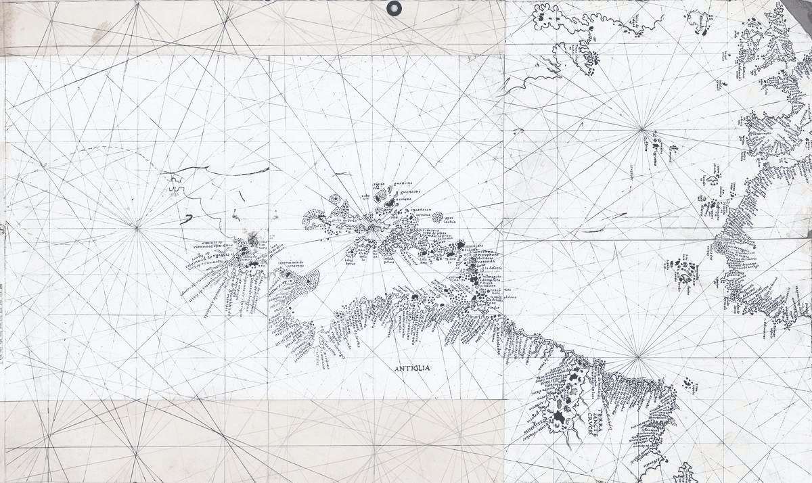

01открыто
Программа «Переход»
Три месяца один на один, если в работе что-то закончилось и нужно решить, чем заниматься дальше. В этом формате программа идёт впервые: первые два человека начинают в ноябре.
Waykeeper — мой проект про то, как пройти время, когда старое рухнуло, а новое ещё не построено.
Миссия проекта — помочь человеку перейти от «со мной так получилось» к «вот что я делаю с этим дальше».
В январе 2025-го я впервые рассказала на людях про свой «Внутренний компас», маленький свод опор, на который у меня ушли сотни часов поисков, и удивилась, что он нашёл отклик. Тогда же я поняла, что годами пыталась прорисовать карту своей жизни так подробно, чтобы быть готовой ко всему, а это невозможно. Сама идея жила со мной гораздо дольше, просто долго не находила формы. Летом 2026-го, после недельного ретрита, я призналась себе, что почти всегда считала себя жертвой обстоятельств и жить так было удобно; для меня самым тяжёлым сдвигом было перестать ждать, что обстоятельства решат за меня.
Рабочее название долго было LifeCompass, по самой проработанной части — компасу: кто ты, что тебе важно, что ты умеешь. Весной 2026-го я ещё представляла проект приложением с ИИ-помощником, а осенью поняла, что в центре метод, семь шагов от истории семьи до встреч после программы, и компас — только один из них. В октябре 2026-го проект и получил имя Waykeeper — от keep your way.
Мне кажется, о себе человек думает историей: что было, что случилось, где было живо, что получалось и что выматывало даже тогда, когда всё шло хорошо, — и почти всё, из чего собирается следующий шаг, в этой истории уже лежит. Поэтому в Waykeeper ценности, способности и повторяющиеся сценарии мы достаём из прожитого и к каждому выводу ищем пример из жизни.
Сами методы выросли из того, что я проходила на себе: курсы и выезды, рефлексивные практики, итоги года, тесты. Я насмотрелась, как по-разному люди собирают одни и те же внутренние опоры, поэтому шаги в Waykeeper у всех одни, а упражнения внутри я подбираю под человека, и тест у нас идёт только сверкой к истории.
Для себя я спроектировала много помощников — приложения, системы, ИИ-ассистентов, ритуалы. Многие из них отмерли, и так я увидела, что работает, а что нет, когда живёшь из себя, а не по схеме. Поэтому в программе остаётся только то, что держится в реальной жизни.

Три месяца один на один, если в работе что-то закончилось и нужно решить, чем заниматься дальше. В этом формате программа идёт впервые: первые два человека начинают в ноябре.
Две встречи онлайн в группе на стыке годов: в конце декабря смотрим на прошлый год, в начале января выбираем, куда дальше. Даты объявлю позже.
Упражнения, которыми я пользуюсь на встречах.
Кто чем помогает и с каким вопросом к кому идти, у каждой профессии — источники. Уже открыт, и я продолжаю его дополнять.
Собираю его себе для расшифровок встреч: он будет искать повторы и противоречия, а я проверять каждый вывод, потому что он ошибается, и иногда красиво.
Весь метод — семь шагов, от истории семьи до встреч после программы. Это карта целиком: шаги 2–6 проходят внутри «Перехода», первый станет отдельной частью проекта, седьмой — по желанию после программы.
лист ожидания
Что передавалось в семье: ремесло, отношение к работе, «надо», доставшиеся по наследству. Пока собираю свою родословную как прототип. Если тебе это интересно, напиши, и я сообщу, когда начну.
Написать в TelegramЖизнь по сезонам: где была энергия, где получалось, что не считалось работой.
Миссия одной строкой, ценности и их главный конфликт, способности с примерами из жизни.
Две-три дороги, разговоры с людьми, которые там уже работают, деньги и решение, в том числе остаться. В программе этот блок называется «Горизонты».
Почему срывались прошлые попытки, на что опереться, один ритуал и аптечка на плохой день.
Вехи на год-два, ближайший квартал шагами, первый шаг и вопрос напоследок: завтра понедельник — сделаешь?
после программы
Встречи-сверки раз в две–четыре недели, по договорённости: свериться с компасом и подкрутить маршрут.
Дат здесь нет специально: следующую часть я беру в работу, когда заработала предыдущая.
Сейчас. С ноября первые два человека проходят «Переход», а я по ходу его поправляю.
Следом. Личные страницы для людей в программе, где компас, карта и маршрут лежат вместе. Собеседник — ИИ на материалах человека, который останется после программы; его я делаю впервые, вместе с первыми участниками. И раздел «Практики со своим ИИ».
Потом. История рода: поиск по семье вместе с генеалогами и ИИ, который помогает разбирать архивы. «Книга жизни» — вся история по главам; свою я сейчас пишу. Сеть keepers, открытая энциклопедия, которую мы напишем вместе с ними, и короткий тест, который по твоему вопросу подскажет, к какому специалисту из атласа идти. Соревноваться я не люблю: даже в играх мне физически больно выходить в PvP, а кооперативные я обожаю.
Keepers, или хранители, — так я называю помогающих специалистов рядом с проектом: психологов, психотерапевтов, коучей, карьерных консультантов, доул. Это люди, к которым можно направить человека, когда его вопрос выходит за мои рамки.
Если ты работаешь в одной из этих профессий, несколько слов тебе.
Я работаю с людьми, у которых в работе что-то закончилось: три месяца один на один мы собираем из их истории компас и маршрут к делу. Я не психолог и не сертифицированный коуч, и всё, что требует твоей компетенции, я передаю дальше.
Если у человека, с которым ты работаешь, вопрос про дело, а состояние в целом держит, можно дать ему ссылку на «Переход». До старта мы дважды разговариваем, и если это не ко мне, я скажу ему об этом прямо. Если человек, который работает со мной, уже в терапии, я не лезу в твою работу.
Чтобы направлять точнее, я собираю атлас помогающих профессий с источниками, он уже открыт. Если хочешь, чтобы я знала о тебе, когда у человека появится запрос в твоей зоне, напиши пару строк о себе и о том, с чем ты работаешь.
Если в работе что-то закончилось и хочется решить, чем заниматься дальше. Всё начинается с разговора на 45–60 минут.
Подвести год в группе — «Новый сезон» →
Следить, как растёт проект, — Канал в Telegram
Поправлять атлас и вместе писать энциклопедию можно уже сейчас.